CMS¶
CMS Account¶
Zum Anlegen eines CMS Accounts ist eine „bezahlte“ Subscription notwendig.
Dazu auf in der Sidebar (links) auf Account klicken. Dort findet sich bei den Tasks ein Punkt Promotion Code:
Nachdem der Promotion Code erfolgeich eingegeben wurde, sind in der Sidebar nun alle Menüpunkte auswählbar. Bei einem Klick auf CMS Account kommt allerdings noch folgende Meldung:
Grund: manche Resourcen (wie ein CMS) brauchen einen eindeutigen Namen. Damit es nicht zu Konflikten mit anderen Kunden kommt, muss für eine Subscription ein Namespace angeben werden. Dafür verwendet man idealerweise ein Kürzel, von dem man auf die Organisation zurück schließen kann. zB kagis, sagis, noegis, vogis, gis-stmk, e-netze, … (nur kleinbuchstaben und Bindestrich, keine Umlaute)

Danach kann ein CMS Account angelegt werden:
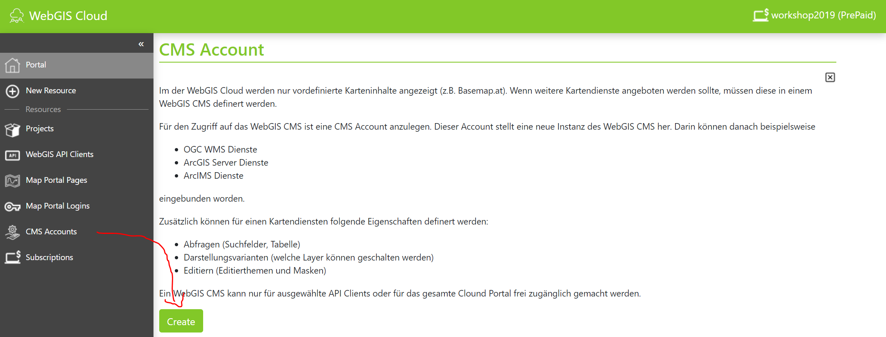Zuerst muss noch das Projekt ausgewählt werden, in dem der CMS Account angelegt werden soll:
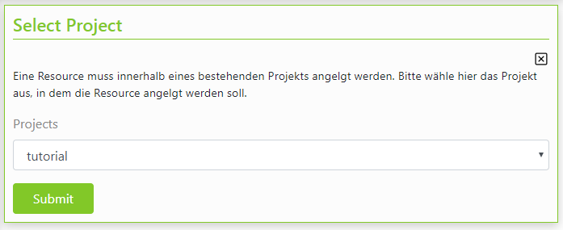Im nächsten Schritt sind eine Id und ein Name für das CMS zu vergeben. Die Id muss später eindeutig sein. Gibt es schon ein CMS mit dieser Id, kommt beim der Erstellung eine Fehlermeldung und mit dem Erstellen muss von vorne begonnen werden.
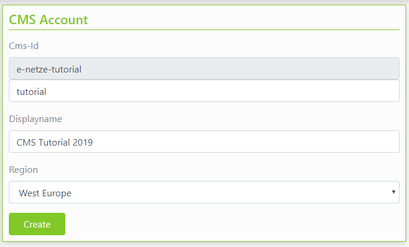Der Displayname sollte ein sprechender Name sein (muss nicht eindeutig sein) und wird später im CMS als Überschrift angezeigt.
Außerdem muss noch die Region ausgewählt werden, in der das CMS bereitgestellt wird (zur Zeit nur West Europe)
Ist das Erstellen erfolgreich wird in etwa folgendes angezeigt:
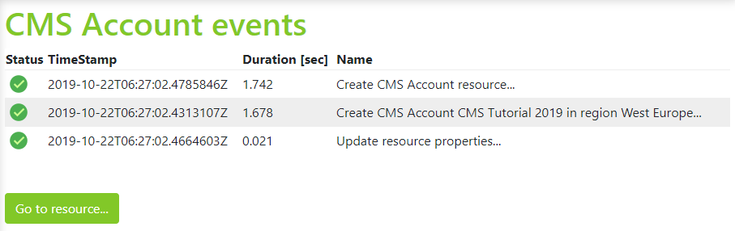Tritt ein Fehler auf, muss mit dem Erstellen wieder von Vorne begonnen werden. Mit Go to resource… kommt man zur Eigenschaftenseite des neu erstellen CMS Accounts:
Hinweis: die bis hier gezeigten Schritte beziehen sich nur auf das Erstellen eines CMS Accounts in der WebGIS Cloud. Bei einer WebGIS Installation bei einem Kunden erfolgt das Anlegen eines Neues CMS über die Datei _config/cms.config im CMS Installationsverzeichnis. Dabei handelt es sich um eine JSON Datei. Dort muss Wurzelverzeichnis eines Neues CMS und weitere Parameter für das Veröffentlichen des CMS zu einer cms.xml Datei angeführt werden. Die genaue Struktur kann man der CMS Installationsdokumentation entnehmen. Die weiteren Schritte zur Parametrierung im CMS sollte sich gleich wie in der WebGIS Cloud verhalten.
CMS Web Oberfläche¶
Über die Eigenschaftenseite des CMS Accounts kommt man mit dem Button Open CMS Account zur eigentlichen CMS Web-Oberfläche (der erste Aufruf kann einige Sekunden dauern, da hier noch der CMS Baum angelegt wird).

Im ersten Schritt sollten einmal Hintergrunddienste angelegt werden.
Hinweis: In der Praxis würde man in einem leeren CMS zuerst auch eine Rechteckausdehnungen definieren. Diese sind im WebGIS 5 notwendig um überhaupt eine Karte Initialisieren zu können. In diesem Objekte wird nicht nur die koordinative Ausdehnung einer Karte, sondern auch die Maßstäbe (Resolutions) angeführt. Diese müssen den Auflösungen der eingebunden Tile Caches ensprechen. In der Cloud können wir allerdings später vorgefertigte Ausdehnung für WebMercator aus dem öffentlichen CMS „webgiscloud“ verwenden. Im öffentlichen Cloud CMS „webgiscloud“ sind ebenfalls die Basemap.at Tiles bereits vorhanden und könnten verwendet werden. Trotzdem werden diese hier zur Demonstration eingebunden.
WMTS Tilecache Dienst einbinden¶
Dazu im CMS Baum zu Dienste/OGC Dienst/WMTS wechseln:
Auf Neuen Dienst einbinden klicken
Im Dialog die Url zum WMTS Dienst eingeben (https://www.basemap.at/wmts/1.0.0/WMTSCapabilities.xml) und auf Aktualisieren klicken:
Die fehlenden Werte werden automatisch ausgefüllt. Im Falle von WMTS kann noch der gewünschte Tiled-Layer ausgewählt werden, wodurch sich wiederum die restliche Werte anpassen.
Danach auf Übernehmen klicken:
Achtung: Damit ein Dienst später auch wie ein Hintergrunddienst geschalten werden kann, muss in den Erweiterten Eigenschaften noch das Wert Basemap auf „true“ gesetzt werden. Das Web CMS sollte das automatisch erkennen von richtig ausfüllen. Sollte es sich beim dem Dienst noch zusätzlich um einen Overlay Tile Cache handelt (Straßennamen über Orhtofoto), muss auf die gleiche Weise noch für die Option „Overlay“ gehandhabt werden.
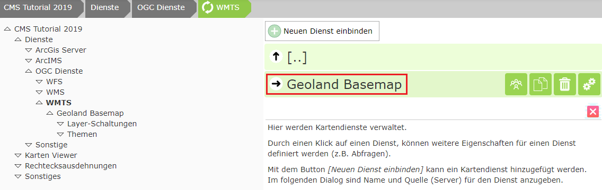Auf den Dienst klicken:
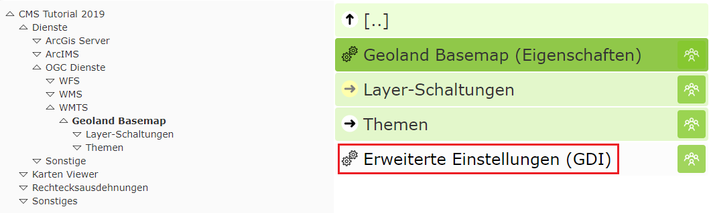 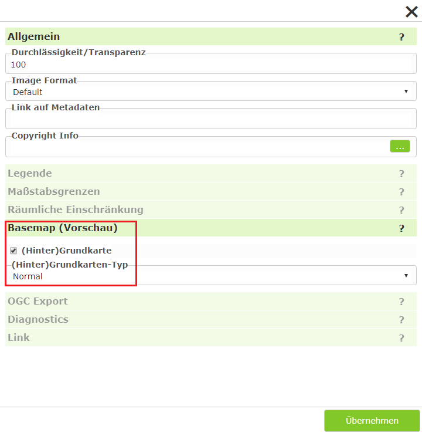Auf die gleiche Weise kann nur verfahren werden, um noch weiter Tiled-Layer der Basemap hinzuzuladen.
Hinweis: Das Einbinden eines Dienstes als WMTS hat den Vorteil, dass hier auch gleich Beschreibungen und Copyright Verweise vorhanden sind. Diese werden direkt übernommen und später im Viewer angezeigt.
ArcGIS Server Dienst einbinden¶
Dazu im CMS Baum auf Dienste/ArcGIS Server/MapServer Dienst wechseln:
Auf Neuen Dienst einbinden klicken:
Danach auf Services Aktualisieren klicken, einen Namen vergeben und auf Übernehmen klicken
Hinweis: Wird der Name im Falle von AGS in der MXD gepflegt, wir auch dieser schon automatisch übernommen. Wird dieser nicht gepflegt, seht als Name im Dienst Layer oder Layers => wird nicht ins CMS übernommen => zu Allgemein
Das Übernehmen kann einige Sekunden dauern. Danach kann man in der Ansicht auf den Dienst klicken und kann so noch weitere Eigenschaften des Dienstes bearbeiten:
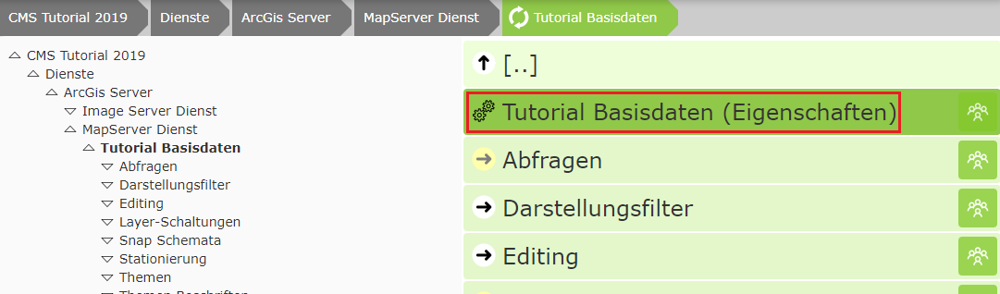 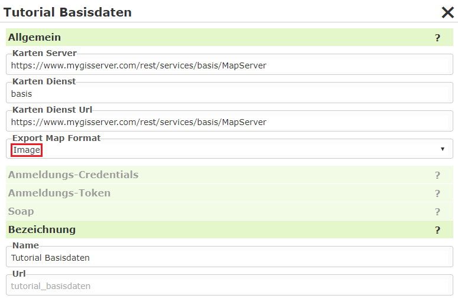Export Map Format: Im Normalfall liefert der AGS das Ergebnis eines Kartenrequest im JSON Format zurück. Darin steht dann die Url zum eigentlichen Bild im Output Verzeichnis. In unserem Fall wird das Bild im Outputverzeichnis hinter unserer Filewall abgelegt und ist NICHT über das Internet erreichbar. Das Kartenbild würde somit zwar erstellt werden, ist aber für den Browser nicht erreichbar. Abhilfe für dieses Problem schafft der Wert „Image“. Dabei kommt das Ergebnis vom AGS nicht als JSON sondern als Bild (Bytes). Dieses nimmt WebGIS direkt in Empfang und legt es ins „Cloud“ – Output verzeichnis ab, das über das Internet verfügbar ist. Diese Methode hat in der Cloud auch den Vorteil, dass über das Internet nicht nachvollzogen werden kann, woher der Kartendienst kommt. Client (Broser) <-> WebGIS <-> ArcGIS Server
Achtung: Für eine beim Kunden installierte WebGIS Instanz sollte dieser Werte in der Regel leer bzw auf JSON gestellt werden, weil ein Client meistens Zugriff auf das Output Verzeichnis hat. So folgt in der Regel weniger Trafik: 1. Client (Browser) <-> WebGIS <-> ArcGIS Server (ImageRequest/JSON) 2. Client (Browser) <-> Output Verzeichnis
Layerschaltungen¶
Später in Kartenviewer sollte einige ausgewählte Themen auf einfache Weise als Darstellungsvarianten geschalten werden. In der Regel sind Dienste mittlerweile sehr umfangreich und nicht alle Themen sind für einen jeden Anwender intersannt. Darum sind wir dazu übergegangen, nur die jene Themen über den Darstellungsvarianten TOC zugänglich zu machen, die für den Großteil der Anwender relevant sind. Über einen bei den Neuerungen gezeigten Umweg kann ein versierter Anwender bei bedarf auf alle Themen zugreifen. Ein zu Umfangreicher TOC überfordert die meisten Anwender in der Regel.
Über Schemes kann später sogar noch unterschieden werden, ob ein Anwender über den Desktop oder über ein Mobiles Gerät eingestiegen ist. Für Mobile Geräte kann können Darstellungsvarianten noch weiter eingeschränkt werden bzw. komplett unterschiedlich aussehen (siehe unten).
Um Layer-Schaltungen zu erstellen muss beim Dienst auf den entsprechenden Abschnitt zu klicken:
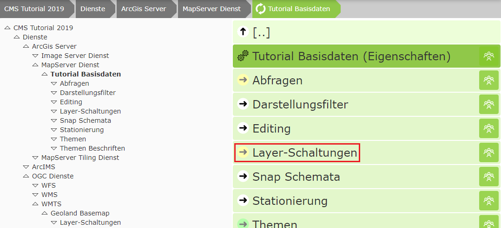Eine Layer-Schaltung ist eine Menge von Layern die mit einem Klick geschalten werden können. Ein Anwender kann so mit einem Klick mehre Layer aus dem Dienst schalten ohne von der Struktur des Dienstes etwas wissen zu müssen.
Bei einfachen Diensten wie hier beim Basisdaten Dienst (besteht hauptsächlich aus Verwaltungsgrenzen) sind in der Regel keine komplizierten Layer-Schaltungen notwendig. Hier ist es legitim, pro Layer eine Layer-Schaltung zu machen. Für diesen Fall sollte man auf den Button Mehrere Einzellayer-Schaltungen anlegen klicken:
Wähle die gewünschten Layer aus und drücke auf Übernehmen.
Die Reihenfolge lässt sich durch Verschieben festlegen. Diese hat später im Viewer aber keine Relevanz, dass das eigentliche Aussehen des Darstellungsvarianten Baumes später unter dem CMS Knoten „Karten Viewer“ (früher GDI) festgelegt wird.
Darstellungsvarianten (Layer-Schaltungen für den Viewer bereitstellen)¶
Dazu um Knoten Karten Viewer/Darastellungsvarianten wechseln
Im ersten Schritt ist ein Container zu erstellen. Dieser stellt die oberste Ebene im Darstellungsvarianten TOC dar. Diese Container können später vom Anwender einzeln aufgeklappt werden. Innerhalb eines Containers können sich die eigentlichen Layer-Schaltungen oder eine/mehrere aufklappbare Gruppe(n) befinden, die wiederum Layer-Schaltungen enthalten können. Die maximale Tiefe ist also drei. Dies gewährleistet auch, dass der Darstellungsvarianten Baum nicht zu komplex wird und der Anwender in der Regel mit wenigen Klicks zum Ziel kommt.
Im Tutorial parametrieren wir zwei Dienste:
Basisdaten (Verwaltungsgrenzen)
Kataster
Die Layer-Schaltungen beider Dienste sollte sich im Viewer in einen Container „Basisdaten“ befinden.
Dazu ist dieser Container über den Button Neuen Container erstellen anzulegen.
Innerhalb dieses Containers kann man nun Layer-Schaltungen hinzufügen:
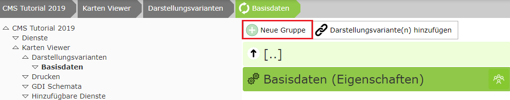In diesem Tutorial möchten wir allerdings noch eine aufklappbare Gruppe mit dem Namen Verwaltungsgrenzen anlegen:
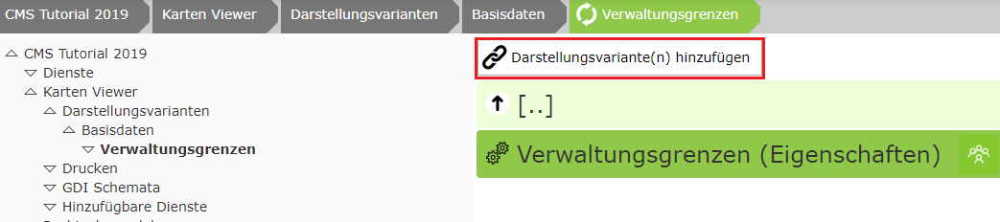Hier können nun die vorhin erstellten Layer Schaltung hinzugefügt werden. Wenn sich im CMS mehre Dienste befinden, muss im Dialog eventuell noch bis zum gewünschten Dienst navigiert werden:
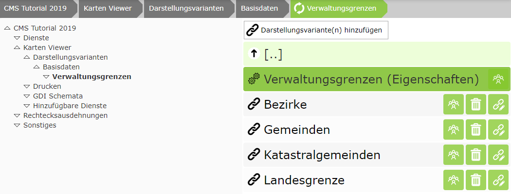Für die hier eingefügten Layer-Schaltungen ist jetzt auch die Reihenfolge für die Auflistung im Viewer relevant. Diese kann durch Ziehen der Knoten festgelegt werden.
CMS Veröffentlichen¶
Um zu überprüfen, wie die bisherige Parametrierung im Viewer aussieht, kann das CMS einmal veröffentlicht werden. Dazu klickt man in der Sidebar auf Deploy:

Es erscheint ein Dialog mit einer Schaltfläche in der noch einmal der Name und gegebenfalls das Datum der letzten Veröffentlichung angeführt wird.
Ein Klick auf diese Schaltfläche startet den Erstellungsprozess:
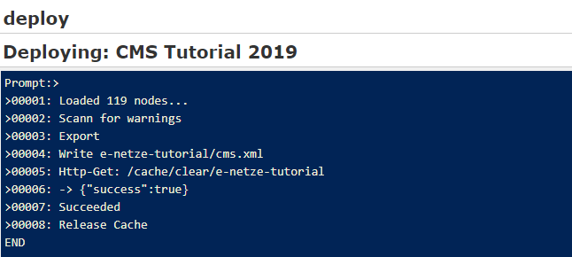Dieser Vorgang kann je nach Größe des CMS Baumes einige Momente dauern. Ist das Erstellen erfolgreich, wird am Ende die Meldung Succeeded ausgegeben und der Dialog kann mit X geschlossen werden.
Treten beim Veröffentlichen Warnungen auf, etwa weil es Darstellungsvarianten gibt, die auf gelöschte Layer-Schaltungen verweisen, bricht der Vorgang ab:
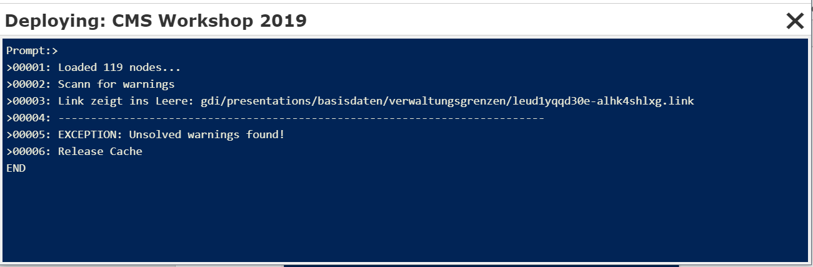Ein CMS mit einer Warnung kann nicht mehr veröffentlicht werden. Zum Lösen des Konfliktes gibt es zwei Möglichkeiten:
Aufgrund der ausgegebenen Meldung das Problem suchen und den entsprechenden Verweis löschen (hier eine Darstellungsvariante)
Die Warnung automatisch löschen
Zu 2: Nach der Ausgabe von Warnungen das Fenster schließen. Die Deploy Dialog erscheint jetzt der Hinweis, dass es beim letzten Veröffentlichen Warnungen gegeben hat:
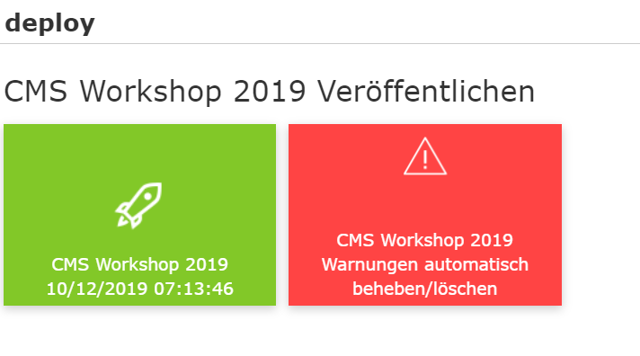Klickt man auf die rote Schaltfläche, wird versucht, die Warnungen automatisch zu beheben, was so viel bedeutet, dass die entsprechenden Verweise gelöscht werden.
Achtung: Diesen Vorgang sollte man nur durchführen, wenn das Löschen der zB Layer-Schaltung beabsichtigt war. Ansonsten werden vielleicht unabsichtlich Verweise gelöscht:
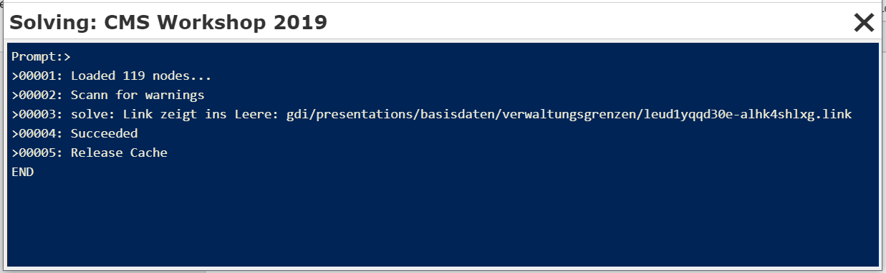Nach diesem Vorgang ist die rote Schaltfläche im Deploy Dialog verschwunden und das CMS kann neu Veröffentlicht werden.